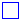

Region 2 (steam) water according to IF97 standard
Extends from WaterIF97_fixedregion (Water: Steam properties as defined by IAPWS/IF97 standard, fixed region).
| Name | Description |
|---|---|
| Inherited | |
| Thermodynamic state | |
| Region=2 | Region of IF97, if known, zero otherwise |
| ph_explicit=true | True if explicit in pressure and specific enthalpy |
| dT_explicit=false | True if explicit in density and temperature |
| pT_explicit=false | True if explicit in pressure and temperature |
|  BaseProperties | Base properties of water |
| Computes density as a function of pressure and specific enthalpy | |
| Computes temperature as a function of pressure and specific enthalpy | |
| Compute temperature from pressure and specific enthalpy | |
| Computes density as a function of pressure and specific enthalpy | |
| Computes pressure as a function of density and temperature | |
| Computes specific enthalpy as a function of density and temperature | |
| Computes specific enthalpy as a function of pressure and temperature | |
| Computes specific enthalpy as a function of pressure and temperature | |
| Computes density as a function of pressure and temperature | |
| Set the thermodynamic state on the dew line | |
| Set the thermodynamic state on the bubble line | |
| Dynamic viscosity of water | |
| Thermal conductivity of water | |
| Surface tension in two phase region of water | |
| Return pressure of ideal gas | |
| Return temperature of ideal gas | |
| Return density of ideal gas | |
| Return specific enthalpy | |
| Return specific internal energy | |
| Return specific Gibbs energy | |
| Return specific Helmholtz energy | |
| Specific entropy of water | |
| Specific heat capacity at constant pressure of water | |
| Specific heat capacity at constant volume of water | |
| Return isentropic exponent | |
| Isothermal compressibility of water | |
| Isobaric expansion coefficient of water | |
| Return velocity of sound as a function of the thermodynamic state record | |
| Compute h(s,p) | |
| Density derivative by specific enthalpy | |
| Density derivative by pressure | |
| Boiling curve specific enthalpy of water | |
| Dew curve specific enthalpy of water | |
| Boiling curve specific entropy of water | |
| Dew curve specific entropy of water | |
| Boiling curve specific density of water | |
| Dew curve specific density of water | |
| Saturation temperature of water | |
| Derivative of saturation temperature w.r.t. pressure | |
| Saturation pressure of water | |
| Bubble point density derivative | |
| Dew point density derivative | |
| Bubble point specific enthalpy derivative | |
| Dew point specific enthalpy derivative | |
| Return thermodynamic state of water as function of d, T, and optional region | |
| Return thermodynamic state of water as function of p, h, and optional region | |
| Return thermodynamic state of water as function of p, s, and optional region | |
| Return thermodynamic state of water as function of p, T, and optional region | |
| Return thermodynamic state so that it smoothly approximates: if x > 0 then state_a else state_b | |
| smoothModel=true | = true, if the (derived) model should not generate state events |
| onePhase=true | = true, if the (derived) model should never be called with two-phase inputs |
| fluidConstants=waterConstants | Constant data for the fluid |
| Return saturation property record from temperature | |
| Return saturation property record from pressure | |
| Return saturation pressure | |
| Return saturation temperature | |
| Return derivative of saturation temperature w.r.t. pressure | |
| Return the molar mass of the medium | |
| Return specific enthalpy from pressure, temperature and mass fraction | |
| Return temperature from p, h, and X or Xi | |
| Return density from p, h, and X or Xi | |
| Return temperature from p, s, and X or Xi | |
| Return density from p, s, and X or Xi | |
| Return specific enthalpy from p, s, and X or Xi | |
| Return thermodynamic state from p and T | |
| Return thermodynamic state from p and h | |
| Return thermodynamic state from p and s | |
| Return thermodynamic state from d and T | |
| Return thermodynamic state from pressure and vapour quality | |
| Return thermodynamic state from temperature and vapour quality | |
| Return vapour quality | |
| Return independent mass fractions (if any) | |
| ThermoStates=Modelica.Media.Interfaces.Choices.IndependentVariables.ph | Enumeration type for independent variables |
| mediumName="WaterIF97" | Name of the medium |
| substanceNames={"water"} | Names of the mixture substances. Set substanceNames={mediumName} if only one substance. |
| extraPropertiesNames=fill("", 0) | Names of the additional (extra) transported properties. Set extraPropertiesNames=fill("",0) if unused |
| singleState=false | = true, if u and d are not a function of pressure |
| reducedX=true | = true, if medium contains the equation sum(X) = 1.0; set reducedX=true, if only one substance (see docu for details) |
| fixedX=true | = true, if medium contains the equation X = reference_X |
| reference_p=101325 | Reference pressure of Medium: default 1 atmosphere |
| reference_T=298.15 | Reference temperature of Medium: default 25 deg Celsius |
| reference_X=fill(1/nX, nX) | Default mass fractions of medium |
| p_default=101325 | Default value for pressure of medium (for initialization) |
| T_default=Modelica.Units.Conversions.from_degC(20) | Default value for temperature of medium (for initialization) |
| h_default=specificEnthalpy_pTX(p_default, T_default, X_default) | Default value for specific enthalpy of medium (for initialization) |
| X_default=reference_X | Default value for mass fractions of medium (for initialization) |
| C_default=fill(0, nC) | Default value for trace substances of medium (for initialization) |
| nS=size(substanceNames, 1) | Number of substances |
| nX=nS | Number of mass fractions |
| nXi=if fixedX then 0 else if reducedX then nS - 1 else nS | Number of structurally independent mass fractions (see docu for details) |
| nC=size(extraPropertiesNames, 1) | Number of extra (outside of standard mass-balance) transported properties |
| C_nominal=1.0e-6*ones(nC) | Default for the nominal values for the extra properties |
| Critical, triple, molecular and other standard data of fluid | |
| Return the Prandtl number | |
| Alias for deprecated name | |
| Alias for deprecated name | |
| Alias for isobaricExpansionCoefficient for user convenience | |
| Alias of isothermalCompressibility for user convenience | |
| Return density derivative w.r.t. pressure at constant temperature | |
| Return density derivative w.r.t. temperature at constant pressure | |
| Return density derivative w.r.t. mass fraction | |
| Return specific entropy from p, T, and X or Xi | |
| Return density from p, T, and X or Xi | |
| Type for mass flow rate with medium specific attributes | |
| Type for absolute pressure with medium specific attributes | |
| Type for density with medium specific attributes | |
| Type for dynamic viscosity with medium specific attributes | |
| Type for enthalpy flow rate with medium specific attributes | |
| Type for mass fraction with medium specific attributes | |
| Type for mole fraction with medium specific attributes | |
| Type for molar mass with medium specific attributes | |
| Type for molar volume with medium specific attributes | |
| Type for isentropic exponent with medium specific attributes | |
| Type for specific energy with medium specific attributes | |
| Type for specific internal energy with medium specific attributes | |
| Type for specific enthalpy with medium specific attributes | |
| Type for specific entropy with medium specific attributes | |
| Type for specific heat capacity with medium specific attributes | |
| Type for surface tension with medium specific attributes | |
| Type for temperature with medium specific attributes | |
| Type for thermal conductivity with medium specific attributes | |
| Type for Prandtl number with medium specific attributes | |
| Type for velocity of sound with medium specific attributes | |
| Type for unspecified, mass-specific property transported by flow | |
| Type for conserved integral of unspecified, mass specific property | |
| Type for flow rate of unspecified, mass-specific property | |
| Type for isobaric expansion coefficient with medium specific attributes | |
| Type for dipole moment with medium specific attributes | |
| Type for partial derivative of density with respect to pressure with medium specific attributes | |
| Type for partial derivative of density with respect to enthalpy with medium specific attributes | |
| Type for partial derivative of enthalpy with respect to pressure with medium specific attributes | |
| Type for partial derivative of density with respect to temperature with medium specific attributes | |
| Type for partial derivative of temperature with respect to pressure with medium specific attributes | |
| Validity limits for fluid model | |
| Phase of the fluid: 1 for 1-phase, 2 for two-phase, 0 for not known, e.g., interactive use | |
| The most basic version of a record used in several degrees of detail | |
| The ideal gas version of a record used in several degrees of detail | |
| The two phase fluid version of a record used in several degrees of detail | |